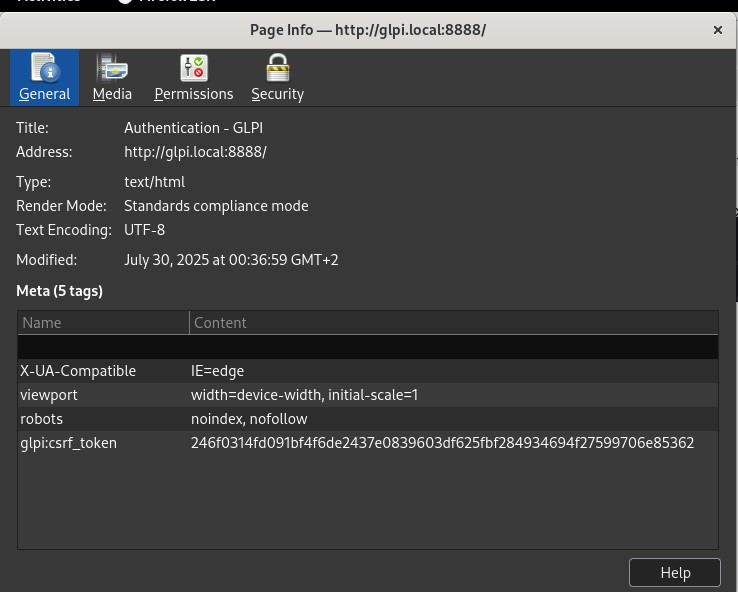
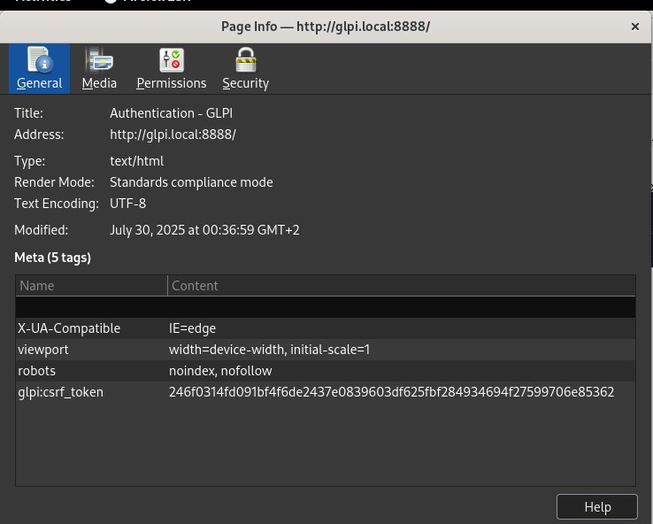

Reverse Proxy NGINX (Docker) pour GLPI & Rocket.Chat


 

NGINX – Point d’entrée unique (HTTPS)
Mise en place d’un reverse proxy NGINX en Docker pour exposer proprement GLPI et Rocket.Chat : sous-domaines dédiés, terminaison TLS, prise en charge WebSocket, et séparation nette entre frontal et backends non exposés.
- Catégorie : Réseau / Sécurité / Publication
- Contexte : VM Linux locale (lab)
- Livrables : Compose,
.env,nginx.conf, vhosts, scripts de test
Besoin d’un point d’entrée unique pour les applications internes avec
simplification des URLs, terminaison TLS centralisée et
possibilité d’ajouter authentification, filtrage IP et journalisation
au niveau du proxy. Choix de NGINX (image nginx:alpine) pour sa
stabilité, ses performances et sa documentation. Le tout orchestré via Docker Compose,
sur un réseau dédié partagé avec GLPI (80/tcp) et Rocket.Chat (3000/tcp).
- Sous-domaines recommandés :
glpi.example.com,chat.example.com. - Backends non exposés sur l’hôte, seuls les ports 80/443 du proxy sont publiés.
- Support WebSocket pour Rocket.Chat (Upgrade/Connection, HTTP/1.1).
Internet
│
[Nginx RP] ← HTTPS 443 / HTTP 80
/ \
glpi.example.com chat.example.com
│ │
[GLPI]:80 [Rocket.Chat]:3000
│ │
──────────── Réseau Docker "glpinet" ────────────
Seul le conteneur NGINX publie des ports. GLPI et Rocket.Chat restent accessibles
uniquement via le réseau Docker glpinet.
# Docker & Docker Compose installés
docker network create glpinet # réseau commun au proxy et aux backends
# En prod : enregistrements DNS publics → IP du proxy
# En lab : /etc/hosts (exemple)
192.0.2.10 glpi.example.com chat.example.com
Les services backends (GLPI et Rocket.Chat) doivent joindre le même réseau
glpinet et être nommés glpi (port 80) et rocketchat (port 3000)
pour une résolution Docker simple côté NGINX.
reverse-proxy/
├─ compose.yml
├─ .env.example # → copier en .env et adapter
├─ nginx/
│ ├─ nginx.conf
│ └─ conf.d/
│ ├─ 10-glpi-subdomain.conf
│ ├─ 20-rocketchat-subdomain.conf
│ └─ 90-paths-example.conf # (optionnel, désactivé)
├─ certs/ # (optionnel) fullchain.pem, privkey.pem
└─ logs/
# .env (extraits)
GLPI_HOST=glpi.example.com
CHAT_HOST=chat.example.com
GLPI_UPSTREAM=http://glpi:80
CHAT_UPSTREAM=http://rocketchat:3000
TLS_CERT_PATH=./certs/fullchain.pem
TLS_KEY_PATH=./certs/privkey.pem
version: "3.8"
services:
reverse-proxy:
image: nginx:alpine
container_name: reverse-proxy
restart: unless-stopped
ports:
- "80:80"
- "443:443"
env_file: .env
volumes:
- ./nginx/nginx.conf:/etc/nginx/nginx.conf:ro
- ./nginx/conf.d:/etc/nginx/conf.d:ro
- ./logs:/var/log/nginx
# TLS local (optionnel, si tu fournis des certs)
- ${TLS_CERT_PATH}:/etc/ssl/certs/fullchain.pem:ro
- ${TLS_KEY_PATH}:/etc/ssl/private/privkey.pem:ro
networks:
- glpinet
networks:
glpinet:
external: true
Démarrage : docker compose up -d → le proxy publie 80/443 et charge automatiquement
nginx.conf + tous les vhosts de conf.d/.
# nginx/conf.d/10-glpi-subdomain.conf
server {
listen 80;
server_name ${GLPI_HOST};
location / {
proxy_pass ${GLPI_UPSTREAM};
proxy_set_header Host $host;
proxy_set_header X-Real-IP $remote_addr;
proxy_set_header X-Forwarded-For $proxy_add_x_forwarded_for;
proxy_set_header X-Forwarded-Proto $scheme;
}
# ⚠️ Activer HTTPS si tu montes des certs :
# listen 443 ssl http2;
# ssl_certificate /etc/ssl/certs/fullchain.pem;
# ssl_certificate_key /etc/ssl/private/privkey.pem;
}
# nginx/conf.d/20-rocketchat-subdomain.conf
server {
listen 80;
server_name ${CHAT_HOST};
location / {
proxy_http_version 1.1;
proxy_set_header Upgrade $http_upgrade;
proxy_set_header Connection "upgrade";
proxy_set_header Host $host;
proxy_set_header X-Real-IP $remote_addr;
proxy_set_header X-Forwarded-For $proxy_add_x_forwarded_for;
proxy_set_header X-Forwarded-Proto $scheme;
proxy_read_timeout 180s;
proxy_send_timeout 180s;
proxy_pass ${CHAT_UPSTREAM};
}
# HTTPS prêt à l’emploi si certs montés (décommente les directives ssl_* comme ci-dessus)
}
Ce mode évite la plupart des problèmes d’assets et de redirections. Les backends
“voient” les bons entêtes X-Forwarded-* (sessions, URL absolues…).
# nginx/conf.d/90-paths-example.conf (désactivé par défaut)
server {
listen 80;
server_name example.com;
location /glpi/ {
proxy_pass ${GLPI_UPSTREAM}/;
proxy_set_header Host $host;
proxy_set_header X-Forwarded-Proto $scheme;
sub_filter_once off;
}
location /chat/ {
proxy_http_version 1.1;
proxy_set_header Upgrade $http_upgrade;
proxy_set_header Connection "upgrade";
proxy_pass ${CHAT_UPSTREAM}/;
}
}
⚠️ Requiert d’ajuster la baseURL côté applications (GLPI & ROOT_URL Rocket.Chat),
sinon CSS/JS cassés. D’où la préférence pour les sous-domaines.
# nginx/nginx.conf
user nginx;
worker_processes auto;
events { worker_connections 1024; }
http {
include /etc/nginx/mime.types;
default_type application/octet-stream;
sendfile on;
keepalive_timeout 65;
# Taille d’upload adaptée aux tickets GLPI / fichiers
client_max_body_size 50m;
# Compression
gzip on;
gzip_types text/plain text/css application/json application/javascript application/xml;
access_log /var/log/nginx/access.log;
error_log /var/log/nginx/error.log warn;
# VHosts
include /etc/nginx/conf.d/*.conf;
}
# Résolution DNS / hosts
dig +short glpi.example.com
dig +short chat.example.com
# Accès HTTP/HTTPS (selon config)
curl -I http://glpi.example.com
curl -I http://chat.example.com
# WebSocket Rocket.Chat
curl -I -H "Upgrade: websocket" -H "Connection: upgrade" http://chat.example.com
# Réseau Docker
docker network inspect glpinet | jq '.[0].Containers|keys'
docker exec -it reverse-proxy sh -c "getent hosts glpi rocketchat"
# Logs NGINX
tail -f logs/access.log logs/error.log
- 502 Bad Gateway : backend down, mauvais port/nom, service non joint au réseau
glpinet→ vérifierdocker ps,docker network inspect, corrigerproxy_pass. - Assets manquants en mode chemin : baseURL incorrecte → préférer les sous-domaines
ou corriger
ROOT_URL(Rocket.Chat) et l’URL de base GLPI. - Sessions/cookies : entêtes manquants → s’assurer que
HostetX-Forwarded-Protosont bien propagés. - WebSocket : 400/upgrade KO → exiger
proxy_http_version 1.1, entêtesUpgrade/Connection“upgrade”.
- Exposer uniquement le proxy ; ne pas mapper les ports des backends sur l’hôte.
- TLS : certs valides (Let’s Encrypt automatisable) + redirection HTTP→HTTPS.
- Limites & timeouts :
client_max_body_size,proxy_read_timeoutselon besoins. - Ops rapides :
docker compose logs -f reverse-proxy docker exec -it reverse-proxy nginx -t docker exec -it reverse-proxy nginx -s reload docker compose pull && docker compose up -d